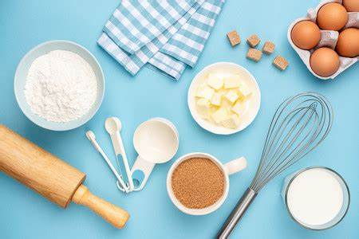

Las últimas tendencias en pastelesPublicado el 23 de Agosto de 2023 por UTPastry 
Descubre las últimas tendencias en pasteles y tortas que están arrasando en el mundo de la repostería. Desde pasteles decorativos hasta opciones saludables, ¡te lo contamos todo! Leer más |
Consejos para decorar tus propios pastelesPublicado el 12 de septiembre de 2023 por UTPastry ¿Quieres aprender a decorar pasteles como un profesional? Te compartimos consejos y trucos para que tus pasteles luzcan tan bien como saben. Leer más |
Nuevas recetas de pasteles deliciososPublicado el 16 de septiembre de 2023 por UTPastry 
Explora nuestras recetas más recientes para pasteles irresistibles. Desde clásicos hasta innovaciones, tenemos algo para todos los amantes de los pasteles. Leer más |
Receta de Pastel de Chocolate con FrambuesasPublicado el 5 de Noviembre de 2023 por UTPastry Prepara este delicioso pastel de chocolate con frambuesas que combina la riqueza del chocolate con la frescura de las frambuesas. Te encantará cada bocado. Leer más |
Decoración Creativa de Pasteles: Ideas InnovadorasPublicado el 15 de Diciembre de 2023 por UTPastry Si buscas ideas para decorar pasteles de manera innovadora, te ofrecemos inspiración y consejos para crear diseños únicos que sorprenderán a tus invitados. Leer más |
El Arte de Hacer Galletas DecoradasPublicado el 9 de Agosto de 2023 por UTPastry Aprende el arte de hacer galletas decoradas con diseños impresionantes. Descubre técnicas, herramientas y recetas para crear galletas únicas y personalizadas. Leer más |
Recetas de Pasteles Saludables para tu DietaPublicado el 20 de Enero de 2023 por UTPastry Descubre nuestras recetas de pasteles saludables que te permiten disfrutar de postres deliciosos sin comprometer tu dieta. ¡Sabor y salud en cada bocado! Leer más |
Postres Exóticos: Descubre los Sabores del MundoPublicado el 10 de Febrero de 2023 por UTPastry Embárcate en un viaje culinario y descubre postres exóticos de diferentes partes del mundo. Desde baklava griego hasta mochi japonés, explora nuevos sabores y texturas. Leer más |
Receta de Tarta de Manzana: Un Clásico ReconfortantePublicado el 7 de Marzo de 2023 por UTPastry La tarta de manzana es un clásico reconfortante que nunca pasa de moda. Aprende a hacerla en casa con nuestra receta y disfruta de su sabor casero. Leer más |
Los Mejores Ingredientes para ReposteríaPublicado el 18 de Abril de 2023 por UTPastry La calidad de los ingredientes es clave en la repostería. Descubre cuáles son los mejores ingredientes que debes usar para lograr postres deliciosos y perfectos. Leer más |
Los Secretos de la Repostería FrancesaPublicado el 25 de Mayo de 2023 por UTPastry Explora los secretos de la repostería francesa y aprende a preparar macarons, croissants y otros deliciosos postres que hacen famosa a la cocina francesa. Leer más |
Receta de Cupcakes de Vainilla y ButtercreamPublicado el 14 de Julio de 2023 por UTPastry Si amas los cupcakes, no te pierdas nuestra receta de cupcakes de vainilla con buttercream. Son perfectos para celebraciones y meriendas especiales. Leer más |